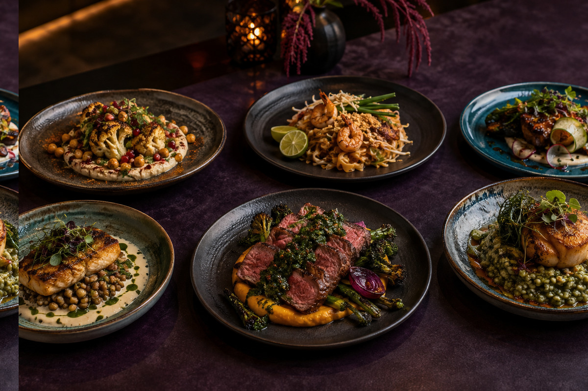
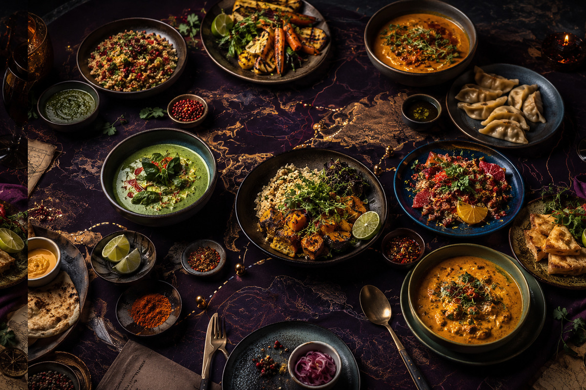
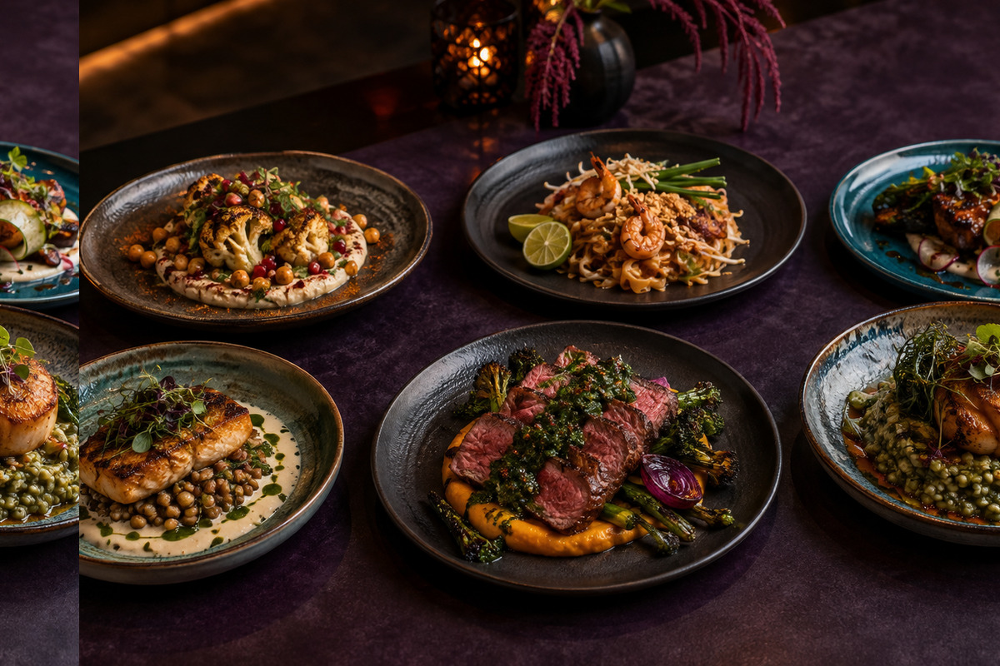
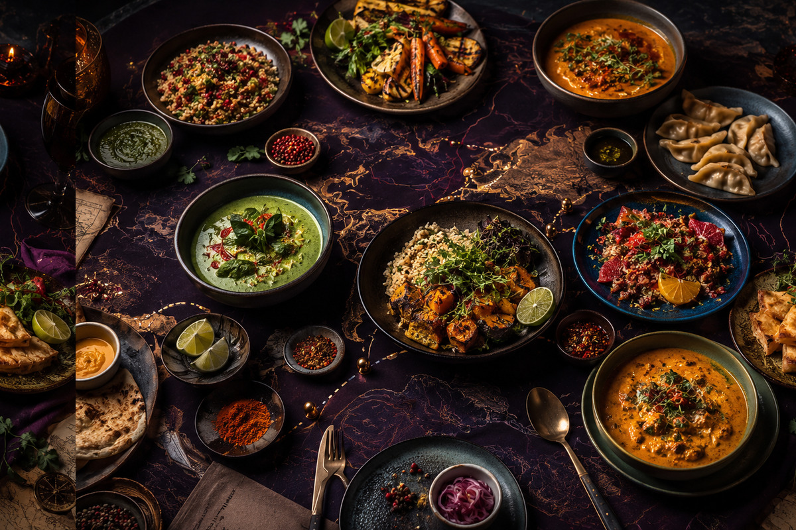
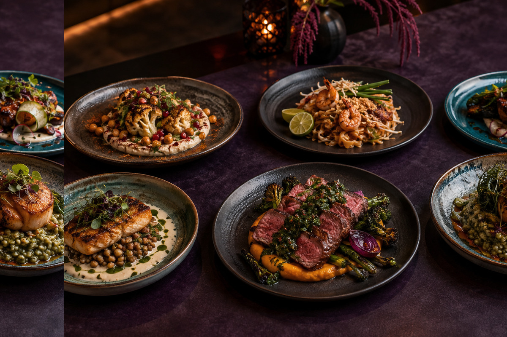
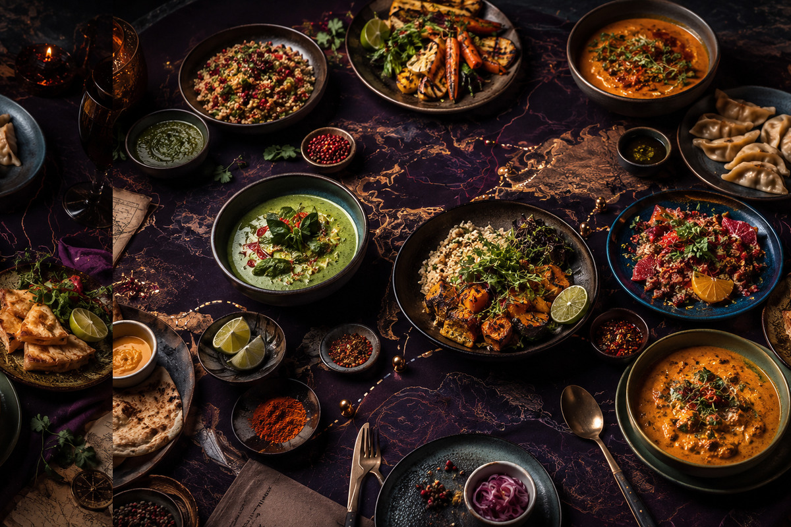
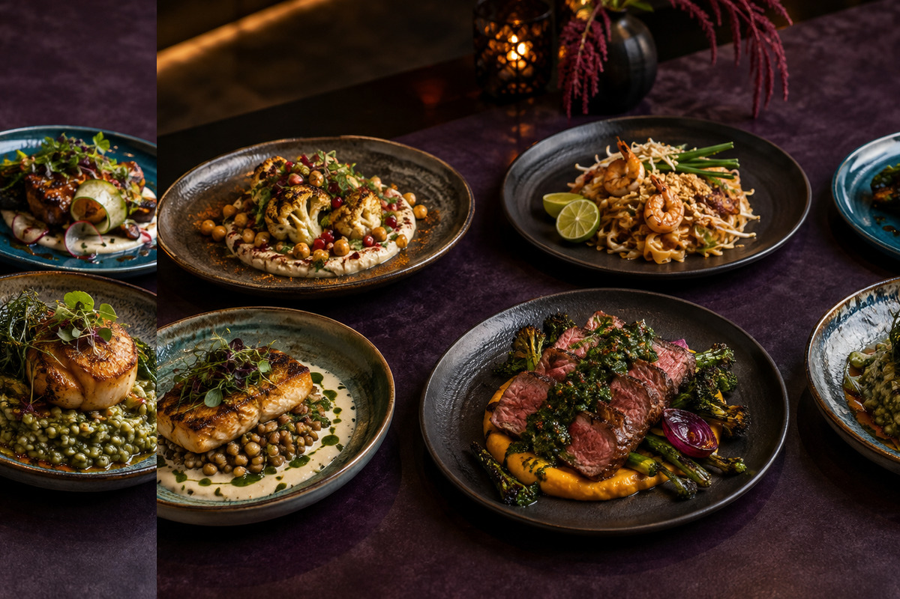
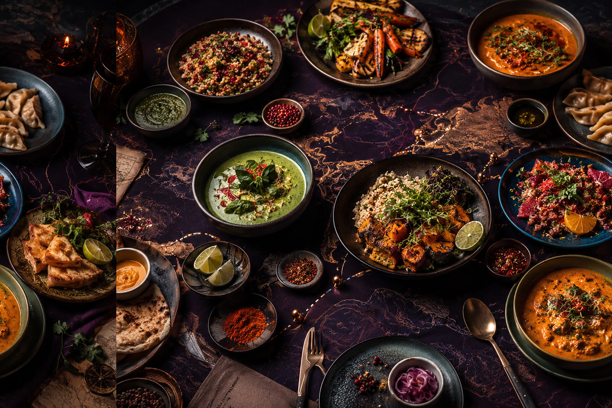

01 · Technique
01 · TechniqueFire to Table: Building Dinner Around Char and Smoke
A practical route from controlled heat to layered, balanced plates.
Read field note → 01 · Technique
01 · TechniqueA practical route from controlled heat to layered, balanced plates.
Read field note →
02 · SeasonalHow to let peak produce write a flexible menu before noon.
Read field note →
03 · TechniqueUsing citrus, vinegar and cultured ingredients without overwhelming dinner.
Read field note →A dependable sequence for generous food on a crowded evening.
Read field note →
05 · One PotBuild aromatic depth with scraps, patience and a clear finishing plan.
Read field note →
06 · Plant ForwardTexture-first vegetable cooking that feels complete and celebratory.
Read field note →A respectful framework for learning unfamiliar flavour combinations.
Read field note →
08 · BakingA calm approach to dough, fermentation and a deeply browned crust.
Read field note →
09 · GatheringOne table, several appetites and a menu that welcomes adaptation.
Read field note →Organise ingredients by function so improvising becomes easier.
Read field note →
11 · TechniqueFruit, caramelisation and spice in balanced main-course cooking.
Read field note →
12 · WeekendPlan a long, restorative meal without spending the whole day at the stove.
Read field note →